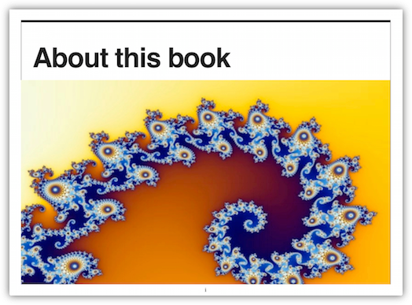
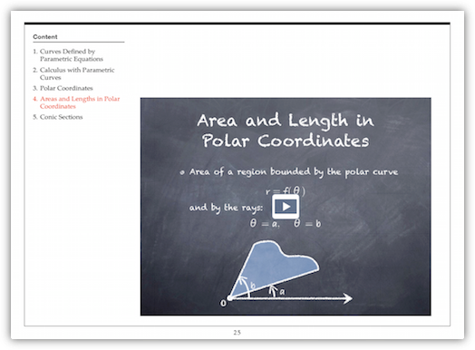

众所周知，苹果刚刚推出了电子教材。我个人认为，这是苹果在电子书领域一次真正的冲锋。凡是了解美国教材市场的，都会明白这个功能远胜纸版而价格不到其平均教材四分之一的革命性教材有多重要。浏览过 iBookstore 上已经上架的样本教材后，我坚信它是会带来改变的。（不过不那么可喜的消息是我的一代 iPad 在打开拥有各种炫目效果的教材时颇为吃力，甚至死机了一次⋯⋯）
另一个没有那么醒目但是在我看来也很有趣的功能是免费的电子书制作软件 iBooks Author。这个软件允许作者自己把自己的作品拿到 iBook Store 上去卖，任何人都可以制作自己写的书然后绕过出版社去直接获利。当然，用这个软件做出来的效果没有那些非常炫的电子教材好看，但是也够用了。
所以我就花了两个小时，把我上学期自己的教学讲义做成了电子书，并且上传到了 iBook Store 里（我选择的是免费发放的模式）。在七天之后这本书终于成功上线，（事实上我到第四天才明白之前的上载出了错误，屏幕截图的尺寸不对，所以真正对方用来处理的时间只有三天。）这本书的下载链接在此，供各位参考。（我选择的是全世界范围都允许下载，但是据说此刻还是只有美国账号才能下载。我不知道这是暂时情况还是什么地方出了问题。）
我本来以为自己是第一个这么做的中国人（虽然这本书是用英文写的⋯⋯），但是后来我得知，事实上至少有另一个人比我更早吃到了螃蟹。不过，我们两人的情形类似，都是因为手上此前已经积累好了素材，所以才会这么方便。我的素材是大量 keynote 文件，而另外这位朋友是 Adobe InDesign 文件。基本上这也说明，把已有的素材移植到 iBooks Author 下是很方便的事情。




制作过程对任何熟悉 iWorks 界面的人来说都可以立即上手，如果手边有 iPad（一代即可），还可以随时上传到 iPad 上查看效果（但不能在电脑上查看效果）。制作完成后有两种主要的导出方式，一种是存为 .ibooks 文件，这是一种可以直接用 itunes 导入 iPad 的文件。如果做出来的电子书只需要在小范围流传，存成这种文件然后分享出去就可以了。如果希望上载到 ibookstore，就需要把它存成 .itmsp 文件，这是专门用来上载给 ibookstore 的文件格式。（除此之外也可以导出为 .pdf 文件，但这就失去电子书的意义了。）
要打开和处理 .itmsp 这种文件格式，需要另一个软件 iTunes Producer，可以在这个叫做 itunesconnect 的网站中的 Deliver Your Content 栏目中下载。这个软件可以把 .itmsp 文件上传到 ibookstore 的远程服务器。上传过程也是向导式的，需要填写一些书籍信息，准备几张屏幕截图就行了，并不复杂。上传完成后，可以在 itunesconnect 上查看自己上传的书籍的状态。再此后就是苹果远程服务器的事情了。需要说明的是他们并不会通知书籍上线的时间，要自己每天通过 iTunes 自己搜索自己的书来看有没有成功上线，实在是很弱智的办法。
这件事从我开始研究整个流程到成功完成一共也没多久，而且几乎不需要任何高端技术知识储备，大多数人都能胜任。当然，有些功能确实还谈不上太完善，比如电子书制作软件可选择的模板实在太少，而自定义格式也不算方便（和 iWeb 用起来感觉差不多，也就是说，纯粹是傻瓜式的，稍微复杂一点的功能就无法设置了）。不过如果一本书只有最简单的文字和图像，也没有复杂的排版，那这个软件基本上足够了。
另一个显而易见的缺陷是这个电子书只能在苹果的设备上使用，这当然是苹果的策略，但是我不知道这种把别家平板一概拒之门外的做法是不是能够长久。这是赢者全拿的策略，但是如果输了，也就会输得很惨。
我不知道国内能不能用到上面所有这些功能（特别是能不能用账号收钱），如果可以的话，我强烈建议各位自己试试看，把自己写过的小说剧本之类做成电子书（当然小心不要盗用版权），也许从明天开始，它们就能带来收入了呢。

January 27th, 2012 11:52
iTunes Connect 的链接有点问题，方便的话可以修改一下吗？
January 27th, 2012 12:38
谢谢，改了。
January 27th, 2012 13:31
[...] 另外，这里有一篇博客也提到了制作以及上传的方法，请移步观看：请点击这里。 Posted in iOS, 桌面／网络开发, 阅读时光 · Tagged: App, iBooks, iBooks Author, PickUp [...]
January 28th, 2012 22:12
Congraulations！刚刚试了， 英国的账号很轻松地成功下载， 虽然看不懂写的什么（对高等数学一窍不通），纯粹来凑热闹。。。：）
January 30th, 2012 10:18
[...] http://blog.farmostwood.net/645.html （木遥的窗子） [...]
January 30th, 2012 23:03
您好，請問一下我上传成功了，但是進入「itunesconnect」網頁中，卻無法上查看到自己上传的书，請問這樣是否正常？謝謝！
January 30th, 2012 23:07
上传成功後進入「itunesconnect」中的完全沒有剛在「iTunes Producer」上传成功的書籍（顯示沒有任何項目）請問我是否那個上架步驟有錯誤呢？還是要審核過後纔會出現呢？謝謝您！
February 1st, 2012 09:26
应该是当即就会出现的。否则大概是对方处理不成功。你可以通过 iTunes Producer 里的 file/package history 查看自己的上传记录，会显示成功与否。
February 2nd, 2012 11:52
你好， iBookstore上传图书，必须是99美元那种开发帐户才可以吗？
February 3rd, 2012 05:09
不需要，我什么账户都不是，就是普通用户。
February 3rd, 2012 07:52
謝謝您的回覆，可惜我似乎怎麼做都無法成功（顯示打勾的成功圖案）但之後看「package history」又顯示「錯誤」，連系統都重灌成10.7.3還是不行，真的不知道問題出在那裡。
February 3rd, 2012 12:11
您可以通过 itunesconnect 里的 contact us 链接试着联系一下他们的客服部门，我联系过，反馈还蛮快的（一两天之内）。
另外，我一开始也总是失败，是因为我上传的截屏图片尺寸有问题。当然这可能和你的问题不同，我只是提醒一下。
February 3rd, 2012 16:39
謝謝木遥，今日與客服部门聯絡了，原來是維護時段所以才如此，問題已解決，感謝你的熱心。
February 9th, 2012 13:36
請問上傳後的書顯示「紅燈」是否正常？還是上傳後就馬上是黃燈（審核中）才對？謝謝！
February 9th, 2012 17:22
要打开和处理 .itmsp 这种文件格式，需要另一个软件 iTunes Producer，可以在这个叫做 itunesconnect 的网站中的 Deliver Your Content 栏目中下载。
为何登录itunes connect找不到iTunes Producer这个东东？木有看到Deliver Your Content栏目。
February 9th, 2012 22:11
@0209
如果过一段时间仍然是红灯，请通过 iTunes Producer 的 file/package history 菜单检查自己的上传包是否正确
February 9th, 2012 22:13
@Alice
主页面的中间左边。如果您还是看不到我就不知道了⋯⋯
February 15th, 2012 04:57
你好，請問上傳後過了7天還是「紅燈」是否代表審核沒過？謝謝！
February 15th, 2012 08:55
@0209
请洽苹果客服，我没遇到过红灯。
February 15th, 2012 15:13
哈～赞一个吃螃蟹文～
April 8th, 2012 13:03
麻烦楼主研究一下这个软件在中国国内能不能用。譬如是不是还需要美国纳税账户，钱能不能打进国内帐户，国内读者能否下载等。我手头有些书稿，很希望用这种方式获得一些收益（出版社太黑，条件太苛刻）。如果能用的话，我就去添置一台苹果MAC。
July 13th, 2012 23:13
我精心做了两本电子书，发布以后审核了几天，结果被通知不支持中文内容的发布。楼主的书是中文版吗？
July 14th, 2012 04:46
英文的。
July 24th, 2012 13:43
目前还是不支持中国地区中文内容的发布，即使免费的也不行。看来还要另想办法了，谢谢楼主的回复。